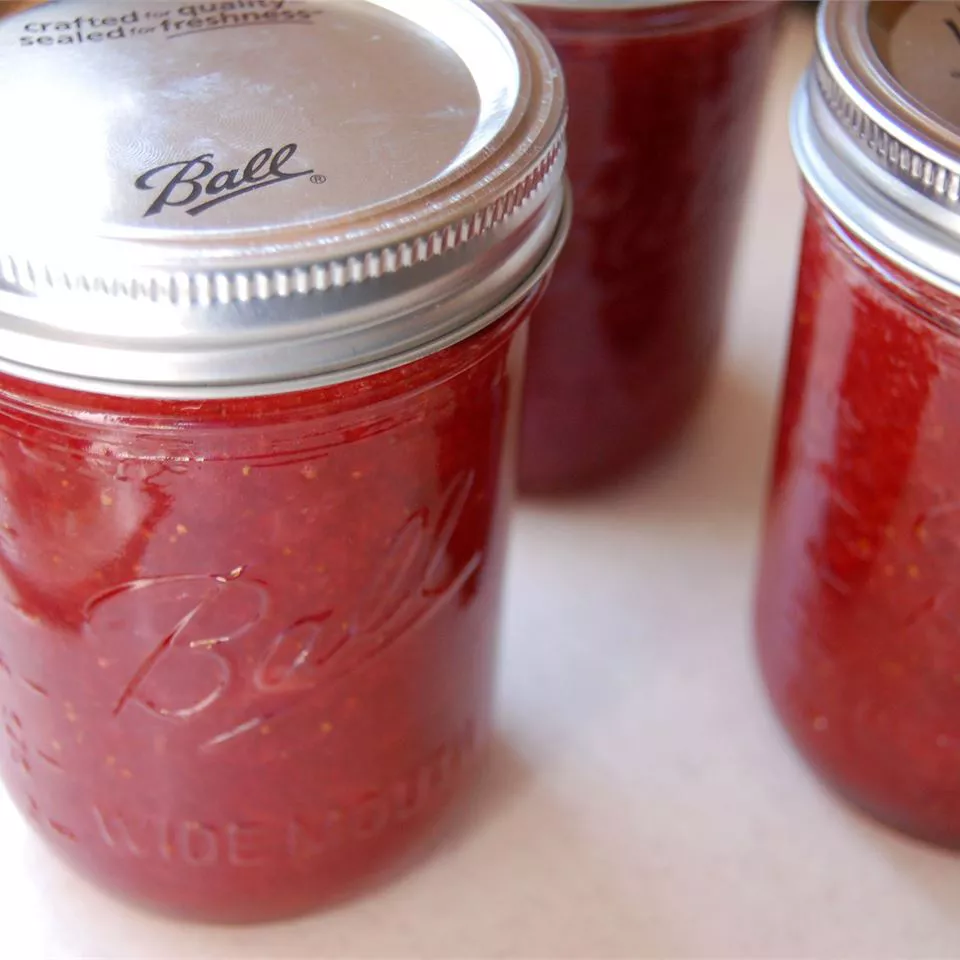

Strawberry Jam

Description
This spreadable strawberry jam will be sure to please.
Ingredients
- 2 pounds fresh strawberries, hulled
- 4 cups white sugar
- ¼ cup lemon juice
Steps
- Crush strawberries in a wide bowl in batches until you have 4 cups of mashed berries.
- Combine mashed strawberries, sugar, and lemon juice in a heavy-bottomed saucepan; stir over low heat until sugar is dissolved. Increase heat to high, and bring the mixture to a full rolling boil. Continue to boil, stirring often, until the mixture reaches 220 degrees F (105 degrees C).
- Check doneness after 10 to 15 minutes by dropping a small spoonful of jam onto a frozen plate. Let sit for 1 to 2 minutes; if jam appears to gel, it is ready. Continue cooking if jam appears thin and runny.
- Transfer jam into hot sterile jars, filling to within 1/4 inch of the top. Top with lids and screw rings on tightly.
- Place a rack in the bottom of a large stockpot and fill it halfway with water. Bring to a boil and lower jars 2 inches apart into the boiling water using a holder. Pour in more boiling water to cover jars by at least 1 inch. Bring to a rolling boil, cover, and process for 10 minutes. Remove the jars from the stockpot and let rest, several inches apart, for 12 to 24 hours. Store in a cool, dark area.